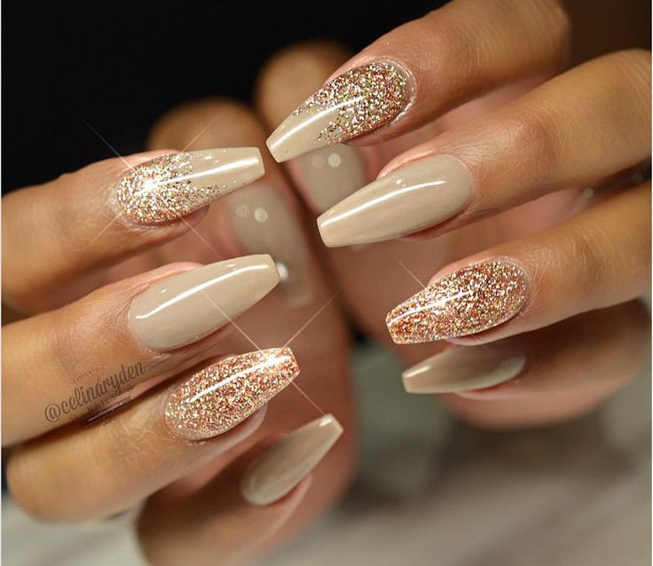
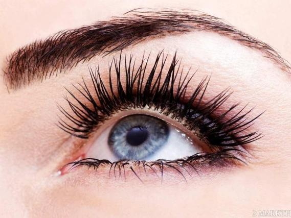
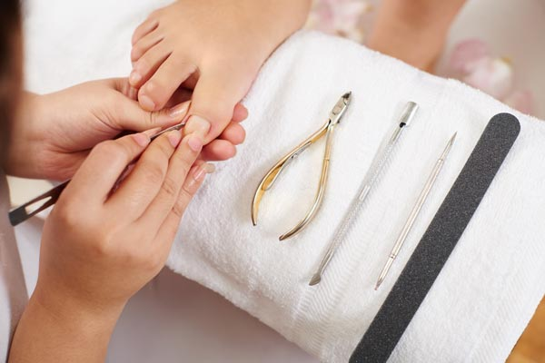

Gelnagels
Gellak combineert de eigenschappen van een gel met die van een nagellak. Voor langdurig gelakte nagels die hun glans niet verliezen en die niet afbladeren. Gellak verstevigt de natuurlijke nagels en zorgt er op deze manier voor dat je gezonde en lange nagels krijgt. Met gellak heb je 2 tot 3 weken perfect gelakte nagels. Ook is de gellak snel en veilig te verwijderen met behulp van hun gellakremover.
Harsen
Je kan kiezen uit verschillende zones: bovenlip, oksels, onderbenen, volledige benen, armen, bikinilijn.
Gelaatsverzorging
De combinatie van ontspanning en huidverbetering zorgen voor een onvergetelijke ervaring. Ga achterover liggen en geniet. Deze behandeling bestaat uit: - Reiniging - Peeling - Stomen - Onzuiverheden verwijderen - Epileren - Gezichtsmassage - Masker - Ampul – Dagcrème

Verven wimpers en wenkbrauwen
Door je wimpers te verven gaan de ogen meer spreken. Het is ideaal voor mensen die slecht mascara verdragen. Bovendien is het superhandig tijdens de vakantie of als je gewoon net iets meer slaap nodig hebt in de ochtenduren. Meestal worden wimpers zwart geverfd, maar bruin is ook mogelijk.
De wenkbrauwen kunnen heel goed geverfd worden. De kleur blijft gemiddeld tussen de 4 à 6 weken zitten en bij regelmatig verven zelfs langer. Wenkbrauwen kunnen geverfd worden in de kleuren: lichtbruin, donkerbruin, grijs en zwart.

Pedicure
Ontsmetten en scrubben van voeten, knippen en vijlen nagels, raspen eelt en massage met voetcreme met of zonder lakken van nagels. Ook gelpolish op teennagels is mogelijk.